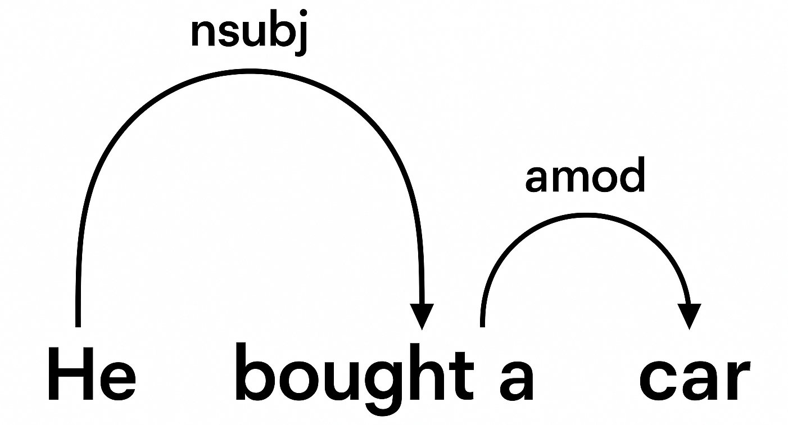
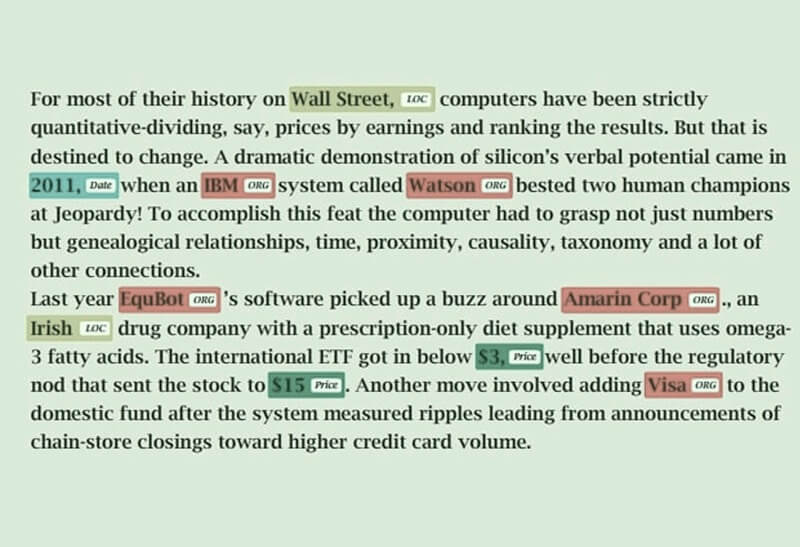
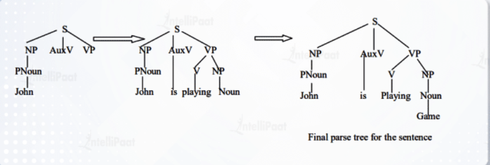
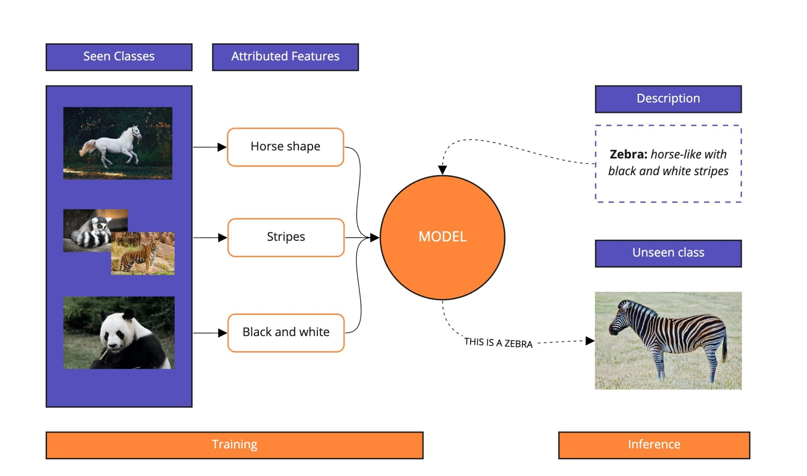

Section 1: Traditional qualitative coding
The Coding Manual for Qualitative Researchers Qualitative Data: An Introduction to Coding and Analysis https://resources.nu.edu/c.php?g=1007180&p=7392331
1.1 Examples of traditional qualitative coding, papers
A interactive NYT article would work nicely here. A lot of their research is qualitative coding voter preferences etc
1.2 Recent updates
https://www.mturk.com/ https://www.prolific.com/academic-researchers
Section 2: Computational text analysis
2.1 Supervised machine learning
Tokenization, Text Normalization, Stop Word Removal, TF-IDF (google it + show off the relevant python/R libraries) For R: - SnowballC - tidytext Python: - scikitlearn
2.1.1 Statistical frameworks
https://smltar.com/ Naive Bayes, Logistic Regression, SVMs - Show off R/python libraries for this
2.1.2 Deep learning frameworks
https://www.packtpub.com/en-us/product/getting-started-with-google-bert-9781838821593
2.2 Unsupervised learning
2.2.1 Topic modelling
- LDA Introduction to Topic Modeling and Text Classification, W.J.B. Mattingly
2.2.2 Clustering
- K-means, Hierarchical Text Mining: Classification, Clustering, and Applications, Ashok N. Srivastava
2.2.3 Embeddings (briefly)
- Word2Vec
- Skip-Gram, CBOW Embeddings in Natural Language Processing: Theory and Advances in Vector Representations of Meaning
2.3 Natural Language Processing (brief)
Natural Language Processing (NLP) is a branch of artificial intelligence that enables computers to understand, interpret, and generate human language. By combining computational linguistics with machine learning and deep learning techniques, NLP allows machines to process language data, and reveal meaning.
2.3.1 Dependency Relationships
At the core of NLP is the concept of dependency. Dependency is the process to analyze the grammatical structure in a sentence and find related words as well as the type of relationship between them. Each word’s grammatical role—such as subject, verb, or object contributes to the overall structure of the sentence. For example, in the sentence “He bought a car.” The verb bought links all of the other words. He is the subject and the car is the object. Dependency parsing is the process by which these relationships are mapped out, creating a visual structure (called a parse tree) that makes the underlying grammatical links explicit. In computational linguistics and NLP, identifying these dependencies is fundamental for tasks like machine translation, question answering, and summarization.
An example of a parse tree for “He bought a new car.” .
These parse trees help explain meanings in complex sentences for the computer. They make a map of semantic meaning.
2.3.2 Named Entity Recognition (NER) / Object Detection
Named Entity Recognition (NER) is a technique in NLP that identifies and classifies named entities in text into predefined categories like person, organization, location, dates. A named entity is a real-world object that can be denoted with a proper name for instance: The University of British Columbia, Vancouver or August 20. “These categories can include, but are not limited to, names of individuals, organizations, locations, expressions of times, quantities, medical codes, monetary values and percentages, among others. Essentially, NER is the process of taking a string of text (i.e., a sentence, paragraph or entire document), and identifying and classifying the entities that refer to each category.” (IBM)
There are two steps in this process:
- identifying the entity
- categorizing it
An example of this could be scanning a stock market report and extracting names of stocks and dates. Here is an example of NER working on an article

The image above is from <cogitotech.com>.
2.3.3 Grammatical Parsing
Grammatical parsing in NLP is the process of examining the grammatical structure and relationships inside a given sentence or text. “It involves analyzing the text to determine the roles of specific words, such as nouns, verbs, and adjectives, as well as their interrelationships” (Intellipaat).
Rather than simply identifying individual words like in Named Entity Recognition, grammatical parsing uncovers how those words fit together. A significant part of this process is the parse tree from before, by constructing one of these the computer can gain an understanding of the structure.
One possible technique is Top-Down Parsing. It begins with the highest-level rule and works downward, recursively expanding each non-terminal symbol until the entire sentence is derived. This method tries to match the input sentence with the grammatical structures prescribed by the language’s rules, starting from the broadest abstraction and breaking it down into smaller, more concrete units.
Lets look at an example from Intellipaat with the sentance “John is playing a game” for this to work the parser already knows that Sentence = S = Noun Phrase (NP) + Verb Phrase (VP) + Preposition Phrase (PP) is a valid grammatical form in English.

In the image above the Top-Down Parser looks through identifing that John is a noun then moves back up and examines the next word until it finally reaches a full sentence structure.
2.4 Recent Updates
Learning goals (2–3 minutes)
- Understand what NLI is and how it enables zero-shot labeling
- Differentiate encoder vs decoder style models at a glance
- Know the four modern workflows: zero-shot, few-shot, RAG, fine-tuning
- Grasp privacy trade-offs: APIs, chat, local vs. cloud
2.4.1 Natural Language Inference (NLI) and Zero-Shot Learning
What is Natural Language Inference (NLI)?
Natural Language Inference (NLI) is a task where a model is given two sentences and must decide if the second sentence makes sense based on the first.
Think of a student passing an exam on a subject they’ve never really studied before. That works because humans generalize from what they know. Zero-Shot Learning (ZSL) lets models do the same — applying knowledge to new tasks without ever seeing examples. Zero-Shot Text Classification
- Premise = the original statement.
- Hypothesis = the statement we want to check against the premise.
The model has to choose between three possibilities:
1. Entailment (Yes) — the hypothesis fits with the premise.
2. Contradiction (No) — the hypothesis clashes with the premise.
3. Neutral (Maybe) — there isn’t enough information to decide.
Example
| Premise | Hypothesis | Answer Type | Why? |
|---|---|---|---|
| A man is riding a bicycle. | A man is outdoors. | Entailment (Yes) | Riding a bike usually implies being outside. |
| A man is riding a bicycle. | A man is swimming. | Contradiction (No) | You cannot ride a bike and swim at the same time. |
| A man is riding a bicycle. | The man is wearing a helmet. | Neutral (Maybe) | The premise doesn’t tell us if he is wearing a helmet. |
This is important because it shows the model isn’t just matching words, it’s making an inference about meaning (reasoning).
From NLI to Zero-Shot Learning
Now imagine this: A student is able to pass an exam on a subject they’ve never studied. They do it by generalizing knowledge from other subjects.
Zero-Shot Learning (ZSL) works the same way for AI. Instead of needing thousands of training examples for a task, we can reframe classification as an NLI problem:
- The premise is the text we want to classify.
- The hypotheses are the possible labels, rewritten as simple sentences.
- Example: “This review is positive.”, “This review is negative.”, “This review is neutral.”
The model then tests: Does the premise support this hypothesis? The one that fits best is then chosen as the label.
Example
- Premise: “The café’s coffee is absolutely amazing!”
- Hypotheses:
1. “This review is positive.”
2. “This review is negative.”
3. “This review is neutral.”
- Model’s answer: Positive — no labeled training data required.
Why Zero-Shot Matters
For a long time, supervised machine learning required building large, carefully labeled datasets before a model could classify text. You had to teach the student (the model) before it could pass the exam. This was expensive and time-consuming.
With NLI-based zero-shot methods, we can:
- Scale human codebooks or categories across very large corpus.
- Prototype quickly test out categories before committing to labeling thousands of documents.
- Explore free-text responses in surveys or interviews without heavy preprocessing. You don’t need to read an entire review to tell the customer is unhappy.
These methods are powered by encoder-only transformers (models designed mainly to read text) like BERT, RoBERTa, and DeBERTa, which are strong at understanding relationships between sentences.
- Before ~2020 Zero-shot classification was rare because a lot of labeled data was needed.
- Now With strong NLI models, we can classify text cheaply and effectively even without training data (teaching the model).
Applications
- Auto-tagging and organizing large collections of documents
- Moderating harmful or misleading content
- Routing customer service tickets to the right team
- Rapidly scanning survey responses to detect themes
Beyond Text: Zero-Shot in Vision
Zero-shot learning is not just for text. Vision-language systems combine images and text in the same “meaning space.” This allows a model to classify images it has never seen before using natural-language descriptions.
For example, given a new photo of an animal, the model can choose between descriptions like “a photo of a zebra” or “a photo of a horse” — even if “zebra” was never explicitly labeled in its training data.

2.4.2 Classification and discovery using decoder only models
What are they?
Decoder-only transformers (pattern matchers like GPT) generate text one word at a time. With the right prompts, they can classify, summarize, or find patterns.
Why it matters
- Works without special training for many tasks.
- Lets us explore and scale categories quickly.
- Used in most modern chatbots and APIs (ChatGPT, Claude, LLaMA, etc.).
Using these models in practice
APIs vs. Chat
- APIs: They allow you to connect the model to your own system. Good for automation.
- Chat UIs: Easy to use and quick. Good for testing ideas.
Local vs. Cloud
- Local: data stays private; needs hardware. - Cloud: easy access; data leaves your system.
Applications
- Auto-tagging document and moderating text
- Detecting customers intent in messages
- Drafting summaries and themes
Watch outs - Models can “hallucinate” (make things up). - Results depend on how you phrase the prompt. - Privacy risks if data leaves your system. - Costs add up if used at scale.
2.4.2.1 Four Ways to Guide Large Language Models
There are four main ways we can get large language models (LLMs) to handle classification or generation tasks. They range from the simplest, asking the model directly (such as when we generally ChatGPT), to the most advanced — retraining it on your own data (teaching a model).
Zero-shot
Ask the model directly. No training data.
Example: “Classify this as positive or negative.”Few-shot
Add a handful of examples to guide the model.
Example: Show 3 labeled reviews, then give it a new one.RAG (Retrieval-Augmented Generation)
Model looks up facts from your own documents and uses what it already knows.
Why: reduces “hallucinations” and keeps answers grounded.
Fine-tuning
Retrain the model on your data (eg. specialising in Legal text)
Best for: consistent style, domain knowledge, large-scale use.
Think of it as a ladder:
Start with zero-shot, move up to few-shot, then RAG, and finally fine-tuning.Each step gives the model more guidance
2.4.2.2 LLMs: APIs vs. Chat-Based Interfaces
LLMs can be used in two main ways:
1. APIs to connect the model into your own systems.
2. Chat-based interfaces interact directly through a conversational window.
Both have strengths and weaknesses, depening on its application.
APIs (Application Programming Interfaces)
What it is
Think of an API as a “pipeline.” You send text to the model in the background, and it sends a response back. There is no chat window, it runs quietly inside your systems.
Strengths
- Its great for automation (batch jobs, workflows, scheduled tasks).
- Can integrate with existing apps (e.g., surveys, chatbots, customer support).
- Scales to handle large datasets consistently.
Use Case: Surveys with APIs
Imagine a company that collects short surveys at the end of every sale. They want to know if customers felt the process was easy or confusing.
Instead of hiring someone to read through thousands of responses, the system sends each survey to an API. The LLM quickly classifies the answers into categories, and the company gets a clear report — all done automatically in the background.
Limitations
- Needs technical setup (developers, coding, integration).
- Not designed for interactive exploration — you don’t “chat,” you send structured requests, usually in the form of code.
Chat-Based Interfaces
What it is
This is the familiar conversational window — you type, the model replies.
Strengths
- Extremely intuitive — no setup required.
- Perfect for brainstorming, Q&A, and demos.
- Great for quick experiments when you want to test an idea on the fly.
Limitations
- Harder to scale or automate (each interaction is manual).
- Answers may be less consistent in formatting compared to API outputs.
Why This Matters (At a Glance)
- APIs = best for quiet, large-scale automation and production systems.
- Chat = best for human-in-the-loop exploration and design.
In practice, most teams combine both approaches:
- Use Chat interfaces for prototyping and developing ideas.
- Use APIs for scaling those ideas into production pipelines.
2.4.2.3 Local models vs. sending data to a company (brief)
The choice:
Do you run the model on your own machine (local), or do you send data to a company’s servers (cloud/hosted APIs)?
Local Models
- Data stays in your own environment, so you have more privacy & control.
- No outside company sees your text.
- Good for sensitive data (health, finance, legal).
- Downsides: needs hardware (GPUs, storage) and technical setup.
Cloud / Hosted APIs
- Example: OpenAI, Anthropic, Google, Microsoft.
- Fast start, easy to use; no setup needed.
- Access to state-of-the-art models.
- Downsides: data leaves your system, subject to company policies.
- Pay per use; can be expensive at scale.
Cost Watch: APIs at Scale API pricing typically depends on how many tokens (pieces of text) you send and receive. For example:
- GPT-4.5 costs about $75 per 1 million input tokens and $150 per 1 million output tokens.
Scenario: If a company processes 10,000 reviews/day, each 100 input + 50 output tokens:
- With GPT-4.5:
- Input cost = (10,000 × 100) / 1M × $75 ≈ $75
- Output cost = (10,000 × 50) / 1M × $150 ≈ $75
- Total ≈ $150/day → ~$4,500/month
- Input cost = (10,000 × 100) / 1M × $75 ≈ $75
Quick Comparison
| Local Models | Cloud/Hosted APIs |
|---|---|
| Privacy & control | Easy & instant access |
| Needs hardware setup | No setup needed |
| Good for sensitive data | Best models available |
| Higher upfront effort | Ongoing usage costs |
Rule of thumb:
- If privacy is critical use a local model.
- If speed & cutting-edge accuracy matter use cloud APIs.
2.5 AI ethics
2.6 Sources
From Section 2.3 - https://www.ibm.com/think/topics/natural-language-processing - https://aws.amazon.com/what-is/nlp/ - https://towardsdatascience.com/natural-language-processing-dependency-parsing-cf094bbbe3f7/ - https://www.ibm.com/think/topics/named-entity-recognition - https://lincsproject.ca/docs/terms/named-entity-recognition - https://intellipaat.com/blog/what-is-parsing-in-nlp/ - https://www.cogitotech.com/natural-language-processing/named-entity-recognition/ From Section 2.4 - Yali Sánchez, Zero-Shot Text Classification — Medium article
- Modulai Blog: Zero-Shot Learning in NLP — https://modulai.io/blog/zero-shot-learning-in-nlp/
- Wikipedia: Zero-shot learning — https://en.wikipedia.org/wiki/Zero-shot_learning